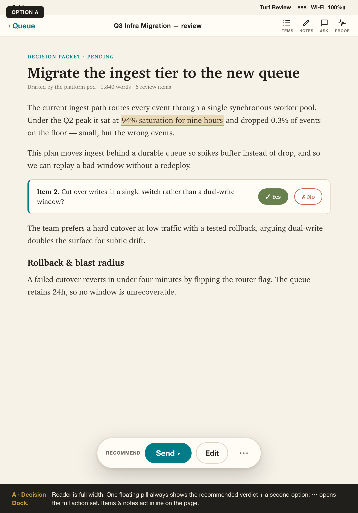
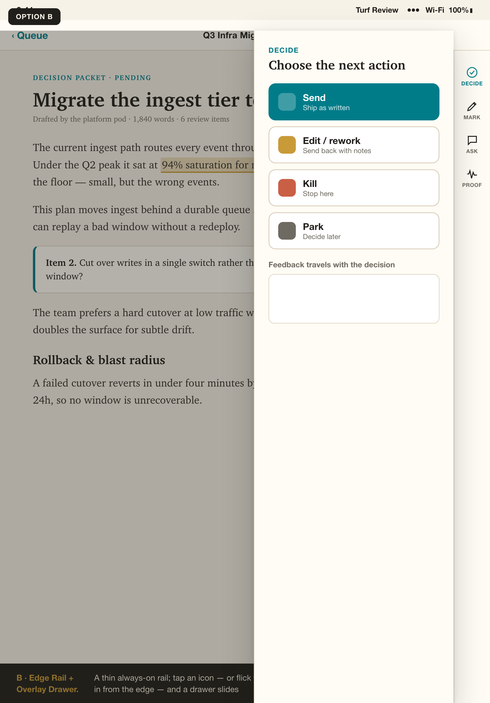
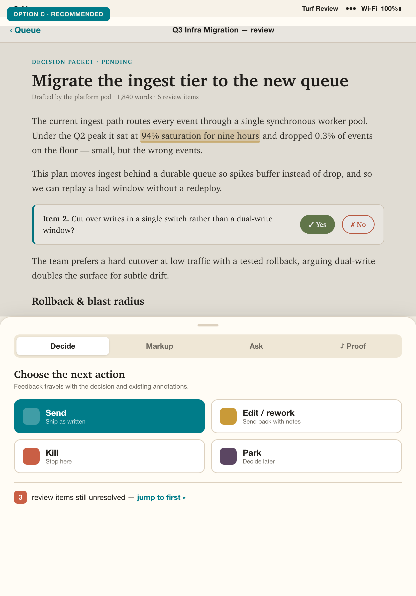
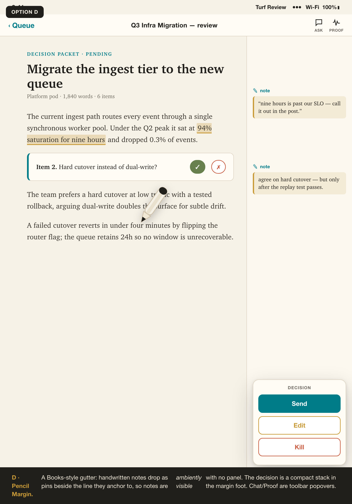
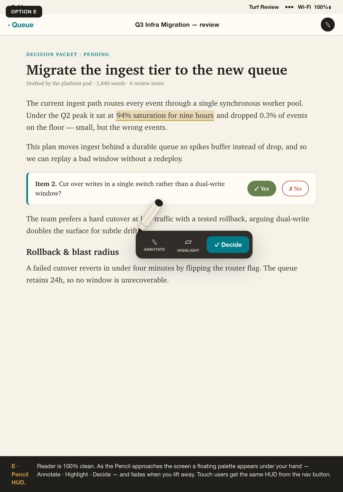

Five ways to surface the review controls without the bottom-bar / narrow-column reflow. All keep the reader full-bleed and float everything else. Shots are iPad-portrait (the painful case). Tap “open live” on any card to see the raw mockup full-size.
Full-width reader. One floating pill always shows the recommended verdict plus a second option; ⋯ opens the full action set. Items & notes act inline on the page.

A thin always-on trailing rail. Tap an icon — or flick the Pencil in from the edge — and a drawer slides over the dimmed reader. The reader never resizes; closing returns full width.

A native resizable sheet over a full-bleed reader (shown at the medium detent). Collapsed = a slim handle with the recommended action + quick ✓/✗; drag up for Markup / Ask / Proof. Identical in portrait & landscape.

A generous gutter: handwritten notes drop as pins beside the line they anchor to, so notes are ambiently visible with no panel. The decision is a compact stack in the margin foot. Chat/Proof are toolbar popovers.

The reader is 100% clean. As the Pencil approaches the screen a floating palette appears under your hand — Annotate · Highlight · Decide — and fades when you lift away. Touch users get the same HUD from the nav button.
